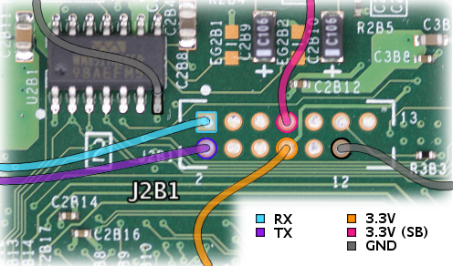
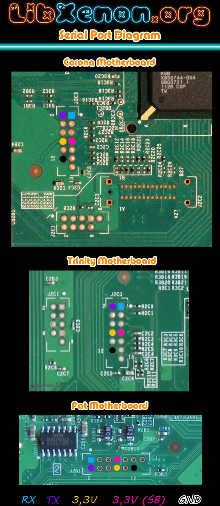

UART
The XBox 360 has an UART in the Southbridge.
Registers
To configure the UART, write to register 0x8000 0200 EA00 101C (real
mode)
| Register value | Configuration |
|---|---|
| 0xE6010000 | 115200,8,N,1 |
| 0xB2010000 | 38400,8,N,1 |
| 0x63010000 | 19200,8,N,1 |
To send a byte, do a 32 bit write to 0x8000 0200 EA00 1014. After you
sent something to the serial port, the status should be read from 0x8000
0200 EA00 1018.
Sample code
Init UART speed:
li %r7, 0x0200
oris %r7, %r7, 0x8000
sldi %r7, %r7, 32
oris %r7, %r7, 0xEA00
#ori %r7, %r7, 0x101C
lis %r8, 0
oris %r8, %r8, 0xE601 # 115200,8,N,1
stw %r8, 0x101C(%r7)
Send char '!' to the serial port (UART):
li %r8, '!'
slwi %r8, %r8, 24
stw %r8, 0x1014(%r7) # send the character
sync
isync
1:
lwz %r8, 0x1018(%r7) # wait until character is sent
rlwinm. %r8, %r8, 0, 6, 6
beq 1b
Get char from the serial port (UART):
lis %r4, 0x8000
ori %r4, %r4, 0x200
rldicr %r4, %r4, 32,31
oris %r4, %r4, 0xEA00
1:
lwz %r8, 0x1018(%r4)
rlwinm %r7, %r8, 0,8,5
cmplwi %r7, 0 # check the status of the UART before input
bne 1b
rlwinm. %r7, %r8, 0,7,7
beq 1b
lwz %r3, 0x1010(%r4) # input char from address 8000 0200 EA00 1010
srwi %r3, %r3, 24
Serial Console
The Serial Console can be very useful when debugging the Linux Kernel or diagnosing the Boot Process.
Diagram FAT

Diagram ALL

You can either use the GND pin on the header (might be difficult to solder for the inexperienced) or some alternative GND pin like the one from the Stereo DAC nearby the J2B1 header.
Note that you will probably need a Level Shifter to connect the 3.3V RX/TX pins to your PC Serial Port (which usually uses +/-12V)
The Level Shifter can be either powered from the standby 3.3V on pin 7 (always on) or better from the active 3.3V on pin 8 or from an external power source.
It is also possible to use some cheap cell phone data cables as a PC interface.
Category:Xbox360_Hardware Category:Xbox360_Development Category:Xbox360_Homebrew_Software